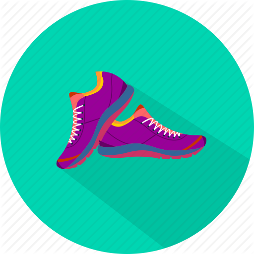
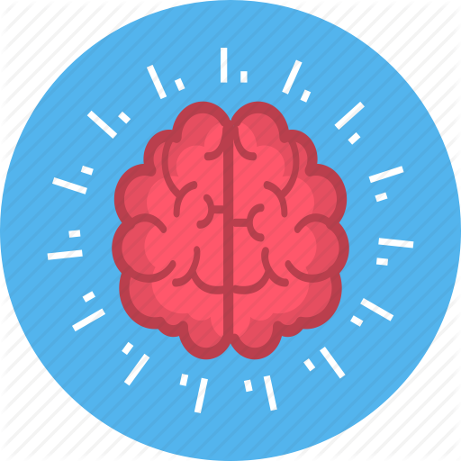
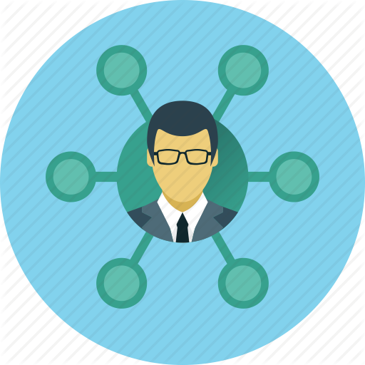
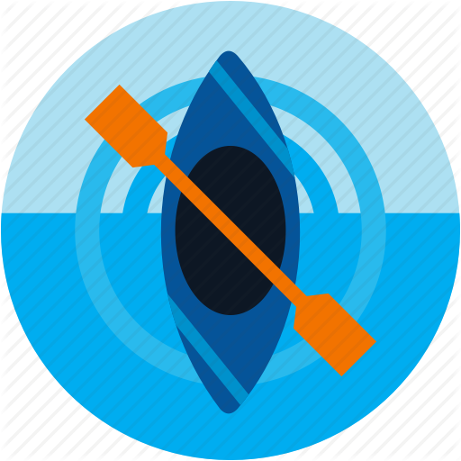

الرياضة
الرياضة هي مجهود جسديّ عاديّ، ومهارة تُمارَس وفق قواعد معيّنة؛ بهدف الترفيه، والتمتُّع، والمنافسة، وتطوير المهارات، وقد مُورِست الرياضة منذ العصور القديمة؛ تحديداً عصر المصريّين القُدامى، مثل: المصارعة، والصيد، والرقص، واستُخدِمت كذلك في تدريب المحاربين، وقد تقدّمت الرياضة على مرّ العصور حتى أصبحت في الوقت الحالي مهنةً أو هوايةً لدى البعض، ودخلت في العلاج النفسيّ والجسميّ كبديل عن الأدوية الكيميائيّة المُعالجة، ويوجد منها العديد من الأنواع، مثل: السباحة، والجري، وسباق الخيل، وكرة القدم، وغيرها.
فوائد الرياضة على الصحة النفسيّة
- تزيد جمال المظهر الخارجيّ للجسم، ممّا يُشعر الإنسان بالراحة والرضا.
- تُعزّز الثقة بالنفس.
- تقي من الإصابة بالأمراض والاضطرابات النفسيّة.
- تُعالج الاكتئاب المتوسّط.
- تزيد المناعة ضدّ الأمراض النفسيّة والاجتماعيّة.
- تمنح الإنسان القدرة على التحكم بضغوط الحياة، والتوتر، والانضباط.
- تُحسّن النوم، وتُعالج الأرق.
- تُخلّص من التفكير السلبيّ، والسّرحان المستمرّ.
- تُعلّم الصبر، وتزيد القدرة على التحمُّل.
- تُكسب المرأة الجرأة والتحدّي، وخاصّةً في المسابقات الرياضيّة.
- تُقوّي الإرادة، والمُثابرة، والقيادة، والإيثار.

فوائد الرياضة الذهنيّة
- تُنشّط العقل، وتقوّي الذكاء بأنواعه كافّةً.
- تُقوّي الذاكرة.
- تُحسّن سرعة البديهة، والملاحظة.
- تزيد قدرة الإنسان على التركيز.
- تُقلّل التشتُّت الذهنيّ.
- تزيد تحصيل الطلبة الدراسيّ، وانتاج الموظفين والعاملين.

فوائد الرياضة الاجتماعيّة
- تكوين صداقات وعلاقات قويّة مع الكثير من الناس.
- احترام القوانين والقواعد والأنظمة الاجتماعيّة؛ لأنّ الرياضة قائمة على قواعد وأنظمة.
- حماية المجتمع من بعض الآفات الخطيرة، مثل: الإدمان على المخدرات والكحول، وارتكاب الجرائم، والتقليل من الفراغ السلبيّ؛ خاصّةً لدى العاطلين عن العمل.
- تُعزيز العلاقات داخل الأسرة الواحدة، والتخفيف من المشاكل.

نشاطات جسميّة تُغني عن الرياضة
- المشي يومياً في أيّ وقت، وأيّ مكان مُحبَّب.
- استخدام الدّرج نزولاً ثمّ صعوداً بدل المصعد الكهربائيّ.
- غسل الملابس والسيارة.
- الزراعة في حديقة البيت، والاعتناء بها.
- اللعب مع الأطفال.
- القيام بأعمال المنزل.
- التحرك أثناء الحديث بالهاتف.
- التحرك أثناء إعداد الطعام.